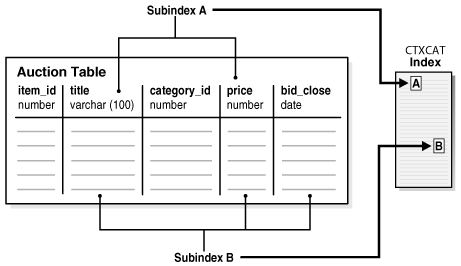

4 Creating Oracle Text Indexes
Learn how to create Oracle Text indexes.
This chapter contains the following topics:
4.1 Summary of the Procedure for Creating an Oracle Text Index
With Oracle Text, you can create indexes of type CONTEXT, CTXCAT, and CTXRULE.
You can choose to keep old index entries to search on original content by using the ASYNCHRONOUS_UPDATE parameter string option.
By default, the system expects your documents to be stored in a text column. After you satisfy this requirement, you can create an Oracle Text index by using the CREATE INDEX SQL statement as an extensible index of type CONTEXT, without explicitly specifying preferences. The system automatically detects your language, the data type of the text column, and the format of the documents. Next, the system sets indexing preferences.
To create an Oracle Text index:
-
(Optional) Determine your custom indexing preferences, section groups, or stoplists if you do not use the defaults. The following table describes these indexing classes:
Class Description How are your documents stored?
How can the documents be converted to plaintext?
What language is being indexed?
How should stem and fuzzy queries be expanded?
How should the index data be stored?
What words or themes are not to be indexed?
How are document sections defined?
-
(Optional) Create custom preferences, section groups, or stoplists.
-
Create the Oracle Text index with the
CREATEINDEXSQL statement. Name your index and, if necessary, specify preferences.
4.2 Creating Preferences
If you want, you can create custom index preferences to override the defaults. Use the preferences to specify index information, such as where your files are stored and how to filter your documents. You create the preferences and then set the attributes.
See Also:
4.3 Section Searching Example: Creating HTML Sections
When documents have internal structure such as in HTML and XML, you can define document sections by using embedded tags before you index. This approach enables you to query within the sections by using the WITHIN operator. You define sections as part of a section group.
4.4 Using Stopwords and Stoplists
A stopword is a word that is not to be indexed, such as this or that in English.
The system supplies a stoplist for every language. By default during indexing, the system uses the Oracle Text default stoplist for your language.
You can edit the default CTXSYS.DEFAULT_STOPLIST or create your own with the following PL/SQL procedures:
-
CTX_DDL.CREATE_STOPLIST -
CTX_DDL.ADD_STOPWORD -
CTX_DDL.REMOVE_STOPWORD
You specify your custom stoplists in the parameter clause of CREATE INDEX.
You can also dynamically add stopwords after indexing with the ALTER INDEX statement.
4.4.1 Multilanguage Stoplists
You can create multilanguage stoplists to hold language-specific stopwords. This stoplist is useful when you use MULTI_LEXER to index a table that contains documents in different languages, such as English, German, and Japanese.
To create a multilanguage stoplist, use the CTX_DDL.CREATE_STOPLIST procedure and specify a stoplist type of MULTI_STOPLIST. You add language-specific stopwords with CTX_DDL.ADD_STOPWORD.
4.4.2 Stopthemes and Stopclasses
In addition to defining your own stopwords, you can define stopthemes, which are themes that are not indexed. This feature is available only for English and French.
You can also specify that numbers are not indexed. A class of alphanumeric characters such a numbers that is not to be indexed is a stopclass.
You create a single stoplist, to which you add the stopwords, stopthemes, and stopclasses, and specify the stoplist in the paramstring for CREATE INDEX.
4.4.3 PL/SQL Procedures for Managing Stoplists
Use the following procedures to manage stoplists, stopwords, stopthemes, and stopclasses:
-
CTX_DDL.CREATE_STOPLIST -
CTX_DDL.ADD_STOPWORD -
CTX_DDL.ADD_STOPTHEME -
CTX_DDL.ADD_STOPCLASS -
CTX_DDL.REMOVE_STOPWORD -
CTX_DDL.REMOVE_STOPTHEME -
CTX_DDL.REMOVE_STOPCLASS -
CTX_DDL.DROP_STOPLISTSee Also:
Oracle Text Reference to learn more about using these procedures
4.5 Creating a CONTEXT Index
The CONTEXT index type is well suited for indexing large, coherent documents in formats such as Microsoft Word, HTML, or plain text.
With a CONTEXT index, you can also customize your index in a variety of ways. The documents must be loaded in a text table.
4.5.1 CONTEXT Index and DML
A CONTEXT index is not transactional. When you delete a record, the index is changed immediately. That is, your session no longer finds the record from the moment you make the change, and other users cannot find the record after you commit. For inserts and updates, the new information is not visible to text searches until an index synchronization has occurred. Therefore, when you perform inserts or updates on the base table, you must explicitly synchronize the index with CTX_DDL.SYNC_INDEX.
See Also:
4.5.2 Default CONTEXT Index Example
The following statement creates a default CONTEXT index called myindex on the text column in the docs table:
CREATE INDEX myindex ON docs(text) INDEXTYPE IS CTXSYS.CONTEXT;
When you use the CREATE INDEX statement without explicitly specifying parameters, the system completes the following actions by default for all languages:
-
Assumes that the text to be indexed is stored directly in a text column. The text column can be of type
CLOB,BLOB,BFILE,VARCHAR2,orCHAR. -
Detects the column type and uses filtering for the binary column types of
BLOBandBFILE.Most document formats are supported for filtering. If your column is plain text, the system does not use filtering. -
Assumes that the language of the text to index is the language specified in your database setup.
-
Uses the default stoplist for the language specified in your database setup. Stoplists identify the words that the system ignores during indexing.
-
Enables fuzzy and stemming queries for your language, if this feature is available for your language.
You can always change the default indexing behavior by customizing your preferences and specifying those preferences in the parameter string of CREATE INDEX.
See Also:
Oracle Text Reference to learn more about configuring your environment to use the AUTO_FILTER filter
4.5.3 Incrementally Creating a CONTEXT Index
The ALTER INDEX and CREATE INDEX statements support incrementally creating a CONTEXT index.
You can incrementally create Oracle Text indexes, which means that the index structure is immediately created but the data is not populated during the index creation or rebuild process. You populate the index later at a suitable time. This procedure is useful for creating indexes in large installations that cannot afford to have the indexing process running continuously. It provides finer control over the creation of indexes, allowing you to avoid building indexes in a single operation.
Incremental index creation involves the following steps:
-
Create an empty index:
If you specify the
NOPOPULATEkeyword at the time of index creation or rebuild, it only creates metadata for the index tables but does not populate them.-
Global index:
For a global index, use
CREATEINDEXto support theNOPOPULATEkeyword in theREPLACEparameter of theREBUILDclause. -
Local index partition:
For a local index partition, modify the
ALTERINDEX...REBUILDpartition...parameters('REPLACE...') parameter string to support theNOPOPULATEkeyword.For a partition on a local index,
CREATEINDEX...LOCAL... (partition...parameters('NOPOPULATE')) is supported. The partition-levelPOPULATEorNOPOPULATEkeywords override anyPOPULATEorNOPOPULATEspecified at the index level.
-
-
Place all ROWIDs into the pending queue:
Use the
CTX_DDL.POPULATE_PENDINGprocedure to populate the pending queues with every ROWID in the base table or table partition. -
Populate the index:
Use the
CTX_DDL.SYNC_INDEXprocedure to populate the index with the queued data.The
SYNC_INDEXprocedure includes themaxtimeargument that indicates a suggested time limit in minutes for the operation. The indexing process runs in an estimate of the givenmaxtimeinstead of running to completion. You might need to run multipleSYNC_INDEXcalls until the index is fully synced.You can choose to run both the
POPULATE_PENDINGandSYNC_INDEXcalls separately so that the population of the pending queue and the population of the index happen at different times, thereby optimizing system performance.
Example 4-1 Incrementally Build an Empty Global Index
-- Create an empty index
CREATE INDEX ctx_ind ON ctx_tab(doc) INDEXTYPE IS CTXSYS.CONTEXT
PARAMETERS ('NOPOPULATE');declare
n_pending number;
function get_pending return number is
n_pending number;
begin
execute immediate 'SELECT COUNT(*) FROM CTX_USER_PENDING WHERE PND_INDEX_NAME = :1'
into n_pending using 'CTX_IND';
return n_pending;
end get_pending;
begin
-- Fill in the pending queue
CTX_DDL.POPULATE_PENDING('CTX_IND');
n_pending := get_pending;
while (n_pending > 0) loop
-- Populate the index through sync_index
CTX_DDL.SYNC_INDEX('CTX_IND', maxtime => 1);
n_pending := get_pending;
end loop;
end;
/Related Topics
4.5.4 Custom CONTEXT Index Example: Indexing HTML Documents
To index an HTML document set located by URLs, specify the system-defined preference for the NULL_FILTER in the CREATE INDEX statement.
You can also specify your htmgroup section group that uses HTML_SECTION_GROUP and NETWORK_PREF datastore that uses NETWORK_DATASTORE:
begin
ctx_ddl.create_preference('NETWORK_PREF','NETWORK_DATASTORE');
ctx_ddl.set_attribute('NETWORK_PREF','HTTP_PROXY','www-proxy.us.example.com');
ctx_ddl.set_attribute('NETWORK_PREF','NO_PROXY','us.example.com');
ctx_ddl.set_attribute('NETWORK_PREF','TIMEOUT','300');
end;
begin
ctx_ddl.create_section_group('htmgroup', 'HTML_SECTION_GROUP');
ctx_ddl.add_zone_section('htmgroup', 'heading', 'H1');
end;
You can then index your documents:
CREATE INDEX myindex on docs(htmlfile) indextype is ctxsys.context parameters( 'datastore NETWORK_PREF filter ctxsys.null_filter section group htmgroup' );
Note:
Starting with Oracle Database 19c, the Oracle Text type
URL_DATASTORE is deprecated. Use
NETWORK_DATASTORE instead.
Related Topics
4.5.5 CONTEXT Index Example: Query Processing with FILTER BY and ORDER BY
To enable more efficient query processing and better response time for mixed queries, use FILTER BY and ORDER BY clauses as shown in the following example:
CREATE INDEX myindex on docs(text) INDEXTYPE is CTXSYS.CONTEXT FILTER BY category, publisher, pub_date ORDER BY pub_date desc;
Because you specified the FILTER BY category, publisher, pub_date clause at query time, Oracle Text also considers pushing a relational predicate on any of these columns into the Oracle Text index row source.
Also, when the query has matching ORDER BY criteria, by specifying ORDER BY pub_date desc, Oracle Text determines whether to push SORT into the Oracle Text index row source for better response time.
4.6 Creating a CTXCAT Index
The CTXCAT index type is well-suited for indexing small text fragments and related information. This index type provides better structured query performance than a CONTEXT index.
4.6.1 CTXCAT Index and DML Operations
A CTXCAT index is transactional. When you perform inserts, updates, and deletes on the base table, Oracle Text automatically synchronizes the index. Unlike a CONTEXT index, no CTX_DDL.SYNC_INDEX is necessary.
Note:
Applications that insert without invoking triggers, such as SQL*Loader, do not result in automatic index synchronization as described in this section.
4.6.2 About CTXCAT Subindexes and Their Costs
A CTXCAT index contains subindexes that you define as part of your index set. You create a subindex on one or more columns to improve mixed query performance. However, the time Oracle Text takes to create a CTXCAT index depends on its total size, and the total size of a CTXCAT index is directly related to the following factors:
-
Total text to be indexed
-
Number of subindexes in the index set
-
Number of columns in the base table that make up the subindexes
Many component indexes in your index set also degrade the performance of insert, update, and delete operations, because more indexes must be updated.
Because of the added index time and disk space costs for creating a CTXCAT index, before adding it to your index set, carefully consider the query performance benefit that each component index gives your application.
Note:
You can use I_ROWID_INDEX_CLAUSE of BASIC_STORAGE to speed up creation of a CTXCAT index. This clause is described in Oracle Text Reference.
4.6.3 Creating CTXCAT Subindexes
An online auction site that must store item descriptions, prices, and bid-close dates for ordered look-up is a good example for creating a CTXCAT index.
Figure 4-1 Auction Table Schema and CTXCAT Index

Description of "Figure 4-1 Auction Table Schema and CTXCAT Index"
Figure 4-1 shows a table called AUCTION with the following schema:
create table auction( item_id number, title varchar2(100), category_id number, price number, bid_close date);
To create your subindexes, create an index set to contain them:
begin
ctx_ddl.create_index_set('auction_iset');
end;
Next, determine the structured queries that you are likely to enter. The CATSEARCH query operator takes a mandatory text clause and optional structured clause.
In the example, this means that all queries include a clause for the title column, which is the text column.
Assume that the structured clauses fall into the following categories:
| Structured Clauses | Subindex Definition to Serve Query | Category |
|---|---|---|
|
'price < 200' 'price = 150' 'order by price' |
'price' |
A |
|
'price = 100 order by bid_close' 'order by price, bid_close' |
'price, bid_close' |
B |
Structured Query Clause Category A
The structured query clause contains an expression only for the price column as follows:
SELECT FROM auction WHERE CATSEARCH(title, 'camera', 'price < 200')> 0; SELECT FROM auction WHERE CATSEARCH(title, 'camera', 'price = 150')> 0; SELECT FROM auction WHERE CATSEARCH(title, 'camera', 'order by price')> 0;
These queries can be served by using subindex B. However, for efficiency, you can also create a subindex only on price (subindex A):
begin
ctx_ddl.add_index('auction_iset','price'); /* sub-index A */
end;Structured Query Clause Category B
The structured query clause includes an equivalent expression for price ordered by bid_close, and an expression for ordering by price and bid_close, in that order:
SELECT FROM auction WHERE CATSEARCH( title, 'camera','price = 100 ORDER BY bid_close')> 0; SELECT FROM auction WHERE CATSEARCH( title, 'camera','order by price, bid_close')> 0;
These queries can be served with a subindex defined as follows:
begin
ctx_ddl.add_index('auction_iset','price, bid_close'); /* sub-index B */
end;
Like a combined b-tree index, the column order that you specify with CTX_DDL.ADD_INDEX affects the efficiency and viability of the index scan which Oracle Text uses to serve specific queries. For example, if two structured columns p and q have a b-tree index specified as 'p,q', Oracle Text cannot scan this index to sort 'ORDER BY q,p'.
4.6.4 Creating CTXCAT Index
This example combines the previous examples and creates the index set preference with the two subindexes:
begin
ctx_ddl.create_index_set('auction_iset');
ctx_ddl.add_index('auction_iset','price'); /* sub-index A */
ctx_ddl.add_index('auction_iset','price, bid_close'); /* sub-index B */
end;
Figure 4-1 shows how the subindexes A and B are created from the auction table. Each subindex is a b-tree index on the text column and the named structured columns. For example, subindex A is an index on the title column and the bid_close column.
You create the combined catalog index with the CREATE INDEX statement as follows:
CREATE INDEX auction_titlex ON AUCTION(title)
INDEXTYPE IS CTXSYS.CTXCAT
PARAMETERS ('index set auction_iset')
;See Also:
Oracle Text Reference to learn more about creating a CTXCAT index with CREATEINDEX
4.7 Creating a CTXRULE Index
To build a document classification application, use the CTXRULE index on a table or queries. The stream of incoming documents is classified by content, and the queries define your categories. You can use the MATCHES operator to classify single documents.
To create a CTXRULE index and a simple document classification application:
-
Create a table of queries.
Create a
myqueriestable to hold the category name and query text, and then populate the table with the classifications and the queries that define each classification.CREATE TABLE myqueries ( queryid NUMBER PRIMARY KEY, category VARCHAR2(30), query VARCHAR2(2000) );
For example, consider a classification for the US Politics, Music, and Soccer subjects:
INSERT INTO myqueries VALUES(1, 'US Politics', 'democrat or republican'); INSERT INTO myqueries VALUES(2, 'Music', 'ABOUT(music)'); INSERT INTO myqueries VALUES(3, 'Soccer', 'ABOUT(soccer)');
Tip:
You can also generate a table of rules (or queries) with the
CTX_CLS.TRAINprocedure, which takes as input a document training set. -
Create the
CTXRULEindex.Use the
CREATE INDEXstatement to create theCTXRULEindex and specify lexer, storage, section group, and wordlist parameters if needed.CREATE INDEX myruleindex ON myqueries(query) INDEXTYPE IS CTXRULE PARAMETERS ('lexer lexer_pref storage storage_pref section group section_pref wordlist wordlist_pref'); -
Classify a document.
Use the
MATCHESoperator to classify a document.Assume that incoming documents are stored in the table
news:CREATE TABLE news ( newsid NUMBER, author VARCHAR2(30), source VARCHAR2(30), article CLOB);
If you want, create a "before insert" trigger with
MATCHESto route each document to anews_routetable based on its classification:BEGIN -- find matching queries FOR c1 IN (select category from myqueries where MATCHES(query, :new.article)>0) LOOP INSERT INTO news_route(newsid, category) VALUES (:new.newsid, c1.category); END LOOP; END;
See Also:
-
Classifying Documents in Oracle Text for more information on document classification and the
CTXRULEindex -
Oracle Text Reference for more information on
CTX_CLS.TRAIN